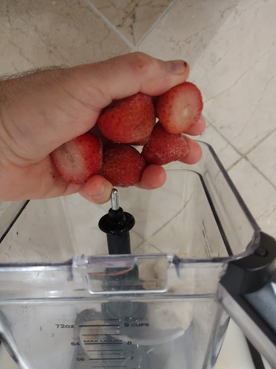
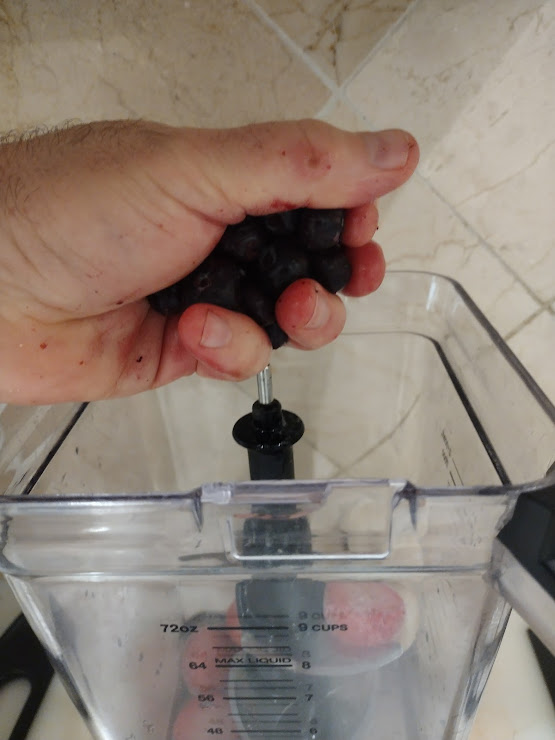
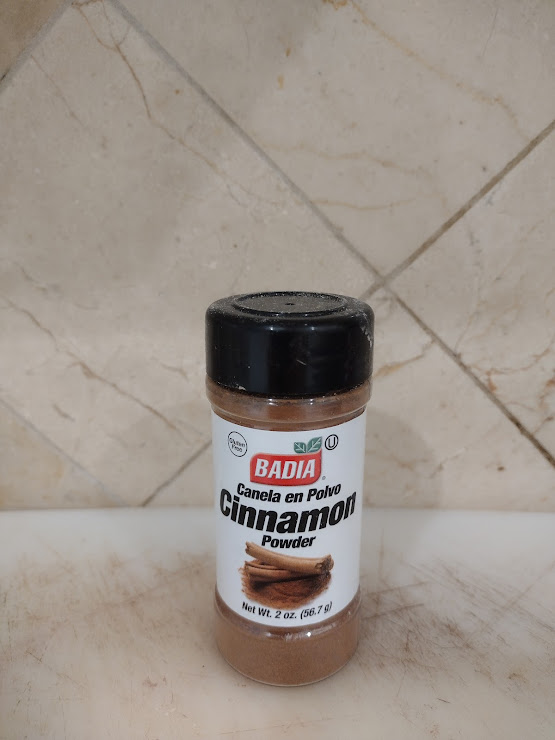
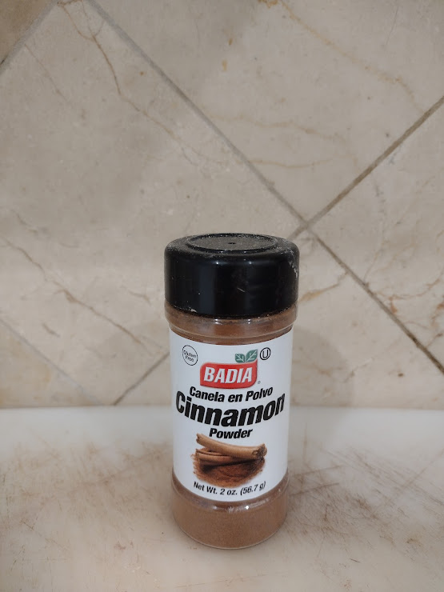
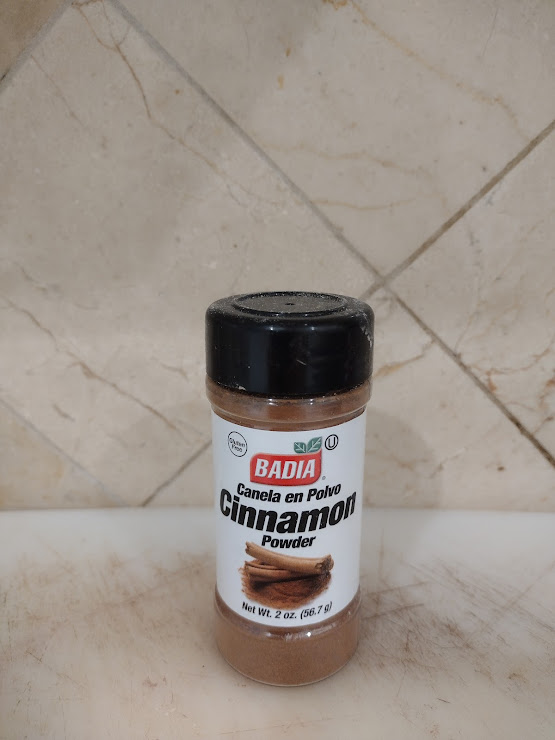

 



EEEEEEEEEEEEEEEEEEEEEEEEEEEEEEEEEEEEEEEEEEEEEEEEEEEEEEEEEEE
EEEEEEEEEEEEEEEEEEEEEEEEEEEEEEEEEEEEEEEEEEEEEEEEEEEEEEEEEEEEEE
-------------------------------------------------------
I didn't always look like this.
I used to be a different person.
I would struggle to wake up each morning, groggy.
My eyelids felt like they had weights on them,
making it a momentous struggle to open them.
I would drag myself each morning to Mr. Coffee and make a morning brew.
That helped.
That helped me make it to work and kept me going until about mid-morning.
Then I felt like I needed another coffee.
Another coffee!
Yes! That was the key!
That was the lift, the boost I needed to keep going!
Always keep going!
I was a teacher after all, and I needed pep! vim! vigor! to teach each lesson and help the students.
Yes, mid-morning coffee was definitely appreciated,
and kept me going until lunch.
But then what happened?
Somehow, everyday after lunch,
I felt tired again,
and so guess what?
I had an afternoon coffee!!!!
Ahhhhhh.......the wonders of afternoon coffee!!!
What had been a slump
was now transformed
into a beautiful afternoon!
Oh, what great afternoons I had!
What epiphanies!
Until....until....until....
Until it was time to go home from work.
Then, all of a sudden, I felt depleted!
Woe is me!
No energy to be found!
But...but....but....
But I wanted to have a good evening!
And so.......
Either before I left work,
or as soon as I got home,
I made myself another cup of coffee!
But for some reason
the evening cup of coffee
didn't help as much.
I didn't get the boost I experienced
from coffee during the day.
I would start feeling less energy,
tiredness would come upon me,
and so.......
as a last-ditch effort,
I would try one more cup of coffee
hoping for that heavenly elixir...
But alas, no matter what I tried,
I had less energy in the evenings
and eventually.....
I...would...get................
tired.
And so, it was off to bed.
The next day, the cycle would repeat.
And the next day, and the next day
and the next day....
------------------------And NoW?!!!!!!!!!!----------------------
Every morning I wake up. No grogginess anywhere! -----------------------------------------------------------------------
I make a Green Smoothie to start my day.
***Chop***Chop***Chop!***
***Chop***Chop***Chop!***
Chopping the organic bananas!
Placing them in baggies to freeze them!
...Adding purified water into a blender...
...Adding the frozen organic fruit!
...Adding the vegan raw protein powder and cinammon!
...And the greens! What luscious organic greens!
...Mixing in a blender
...And partaking of a drink that nourishes my entire being!
...Radiant energy the entire day!
Oh bliss! Oh joy! Oh rapture!
